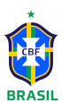
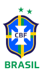
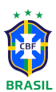
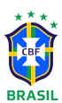
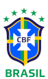
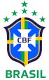

A história da Copa do Mundo
O projeto de organizar uma Copa do Mundo começa na criação da FIFA (Federação Internacional de Futebol Associado) em 21 de maio de 1904. A FIFA, entidade máxima do futebol, foi fundada em Paris, na França e tem sua sede em Zurique, Suíça. Em 1906, a primeira tentativa da edição, iniciada pelo líder neerlandês Carl Hirschmann estava prevista na Suíça, com quatro grupos de quatro seleções como uma primeira rodada haviam sido implementadas. Mas no final das confirmações de inscrição para os dezesseis países convidados, em 31 de agosto de 1905, nenhuma federação confirmou sua participação e o projeto, naquele momento, foi abandonado. Com o estabelecimento de um torneio de futebol olímpico no ano de 1908, Hirschmann queria prosseguir com o reconhecimento desse torneio olímpico como o campeonato mundial de futebol amador. A ideia foi validada no Congresso da FIFA em 1914, mas a Primeira Guerra Mundial bloqueou a iniciativa.[2] Depois da Guerra, a FIFA mudou a sua atitude. Após a sua eleição como Presidente da FIFA, o francês Jules Rimet colocou tudo em vigor com o dirigente esportivo compatriota Henri Delaunay, para não mais reconhecer o torneio olímpico como o campeonato mundial de futebol amador, lutando para a criação de uma nova competição. Os Jogos Olímpicos de 1924 e 1928 puderam estabelecer um diálogo construtivo entre as formações da América do Sul e da Europa.
A Copa do Mundo pela FIFA proposta foi aprovada em uma conferência em Amsterdã, no dia 26 de maio de 1928, por vinte e cinco votos a favor e cinco contra, com uma abstenção. A organização da primeira Copa do Mundo foi então atribuída ao Uruguai no Congresso da FIFA, em Barcelona, 18 maio de 1929, para celebrar o centenário de sua independência, mas também porque a seleção havia sido campeã olímpica duas vezes, em 1924 e 1928.
O ritmo da Copa do Mundo é fixo, alternando com os Jogos Olímpicos. Na época da criação da Copa, quase todas as equipes tinham a mesma formação nos Jogos Olímpicos e na Copa do Mundo, porque eles tinham um estatuto de amador. No entanto, a competição foi rapidamente se tornando profissional. Se a Olimpíada era para amadores, a FIFA reconhecia a Copa e aceitava as equipes que optavam pelo profissionalismo. Até hoje em dia, aliás, os objetivos e os valores divergem, a Copa do Mundo é aberta para todos, profissionais e amadores.Muitos jogadores de futebol no mundo também, possuem dois empregos. É comum vermos atletas assim participando de Copas do Mundo juvenis, como sub-20 e sub-17.
Desenvolvimento da Seleção Brasileria cada vez que foi campeã
1958 - Suécia
A seleção ficou em 1º lugar num grupo que continha Inglaterra, União Soviética e Áustria; venceu o País de Gales nas quartas-de-final; na semifinal, goleou a França por 5–2. A final foi disputada no Estádio Råsunda entre Brasil e Suécia. O Brasil jogou de camisa azul, pois ambos os times tinham o uniforme nº 1 em cor amarela. A Seleção Brasileira venceu por 5–2, mesmo placar que aplicara na semifinal. Nessa partida, a seleção teve jogadores como Pelé, Vavá, Bellini, Zito, Mazzola, Garrincha, Didi, Gilmar e Zagallo. A Copa marcou para o mundo o surgimento de Edson Arantes do Nascimento - o Pelé - com apenas 17 anos.
1962 - Chile
A seleção logrou seu bicampeonato nesta Copa. O Brasil se classificou em 1º lugar do grupo, na primeira fase. Eliminou a Inglaterra nas quarta-de-final e o Chile na semifinal. Na final, o Brasil venceu a Tchecoslováquia por 3–1. Os jogadores Garrincha, Vavá, Djalma Santos, Nílton Santos e Zagallo foram destaques, tendo Pelé se contundido e sido substituído por Amarildo. Vavá tornou-se o grande goleador dos dois primeiros títulos mundiais do Brasil.
1970 - México
Em 1970, a Seleção Brasileira, para evitar a repetição da decepção de 1966, realizou grande preparo físico e de organização antes da Copa, tendo sido considerada uma das melhores seleções brasileiras da história, senão a melhor. O técnico era Zagallo.
Uma campanha irretocável do Brasil. Na primeira fase, o Brasil derrotou todos os seus adversários: a bi-vice-campeã mundial Tchecoslováquia, a então campeã Inglaterra e a Romênia. Nas quartas-de-final, eliminou por 4–2 o Peru, treinado pelo brasileiro Didi. Nas semi-finais, o prelúdio de um possível tricampeonato: os então bicampeões mundiais Brasil e Uruguai se enfrentaram, com vitória brasileira por 3–1, com a vitória sendo saudada pelo público brasileiro como o "troco" pelo Maracanaço - e acabou sendo o "troco" definitivo mesmo, pois Brasil e Uruguai jamais voltaram a se enfrentar em Copas do Mundo.
Brasil e Itália, então bicampeões mundiais, duelaram na final, no estádio Azteca, no México, disputando o título de Primeira Seleção Tricampeã Mundial, que conquistaria em definitivo a Taça Jules Rimet. O Brasil venceria por 4–1, goleando sua rival.
Em 2007, a revista inglesa World Soccer, numa pesquisa realizada entre especialistas de futebol de todo o mundo, elegeu a seleção brasileira de 1970 como o maior time de futebol de todos os tempos.
1994 - Estados Unidos
Na fase de grupos, o Brasil vencera a Rússia, os Camarões e empatando com a Suécia, ficando em primeiro do seu grupo. Nas oitavas-de-final, vitória de 1–0 sobre o anfitrião EUA, em 4 de julho - Dia da Independência dos Estados Unidos. Nas quartas de final, vitória de 3–2 sobre os Países Baixos. Nas semi-final, vitória sobre a Suécia por 1–0. A final seria contra a Itália. O técnico era Carlos Alberto Parreira.
Assim como em 1970, Brasil e Itália fizeram a final em que surgiria a primeira seleção tricampeã mundial de futebol, em 1994 Brasil e Itália fizeram a final em que surgiria a primeira seleção tetracampeã mundial de futebol. Numa partida sem gols, Brasil e Itália fizeram a primeira final de Copa do Mundo definida por pênaltis. O tetracampeonato brasileiro veio após o italiano Roberto Baggio mandar a bola acima do travessão e a sequência de cobranças de pênaltis finalizar em 3–2 a favor do Brasil.
2002 - Coreia do Sul/Japão
A seleção brasileira, na preparação para a Copa, não vinha apresentando bons resultados: o Brasil havia sido eliminado da Copa das Confederações e da Copa América, neste último caso perdendo para a seleção de Honduras. Porém, na Copa do Mundo, a Seleção de Rivaldo, Ronaldo e Ronaldinho Gaúcho obteve uma campanha numericamente perfeita, com 100% de aproveitamento: sete vitórias em sete jogos, contra Turquia, China, Costa Rica, Bélgica, Inglaterra, novamente Turquia e Alemanha. Ronaldo marcou os dois únicos gols na final, contra a Alemanha. Em 1970, o Brasil se tornara a primeira seleção tricampeã mundial, em 1994 se tornara a primeira tetracampeã, e em 2002, a primeira pentacampeã.
Para ver mais detalhes de cada vez campeão, clique em cada brasão que seja da sua vontade






CLIQUE AQUI PARA MONTAR A SUA SELEÇÃO COM OS CAMPEÕES